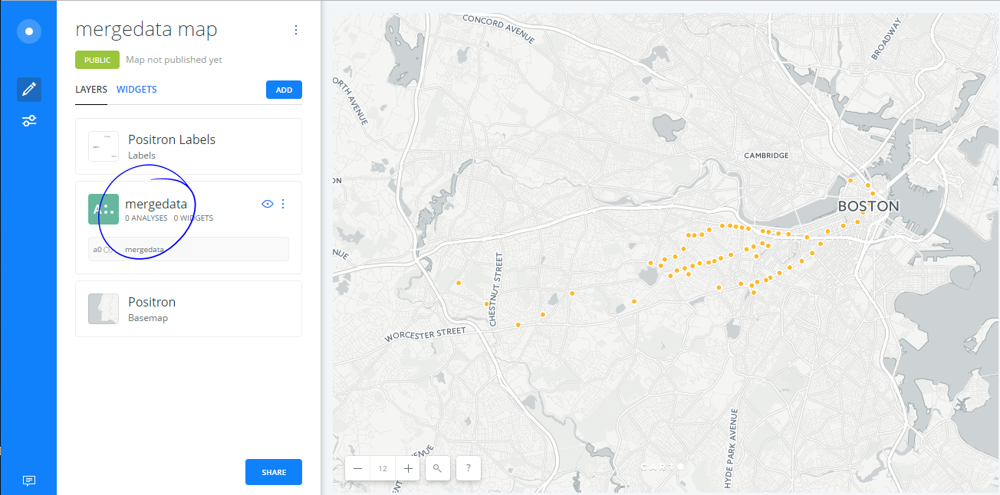

Transit Data Mapping Basics
CartoCamp - March 31 2017
Why is Open Transit Data important?
What you will learn today?
Where to find transit data
Strategies on wrangling transit data
Ways of determining performance
Mapping the reliability of a transit system
Getting Data
Kinds of Transit Data
Shapefiles
Historical Archives (e.g. CSV)
General Transit Feed Specification Static and Realtime ( GTFS)
How do you measure performance?
It's complicated.
Open TDashboardData_reliability_20160301-20160331.xlsx
Or download the data.
Open mbta_station.csv
This file contains coordinates of the stations.
Source is from the MBTA Rapid Transit Station shapefile, with some manual clean up.
MBTA GTFS Static Feed provides similar data, also requiring some manual clean up.
Launch R Studio
R Studio Overview

File -> Open File -> greenline_analysis.R

"Run" through each step. Note: Update file paths
Open Carto

Load New dataset: joindata.csv

Change Type to Date
Create Map

Make A Map
Select avg(rely) and Choose Color

What do you see?
Where are people waiting the longest?
Make Animated Map
Under Fill: Choose rely, Quantile, and Color

under Column: Choose Service Date

What additional data would be useful?
How might you go about getting it?
Thanks to:
You, Carto, TransitCenter, Nature of Cities
Stay in touch: Open Transit Data Toolkit Email List
Resources: Transit Data
Other Resources:
NYC MTA Developers Google Group
Mass DOT Developers Google Group
Google, Stack Overflow, Stack Exchange
Resources: Performance